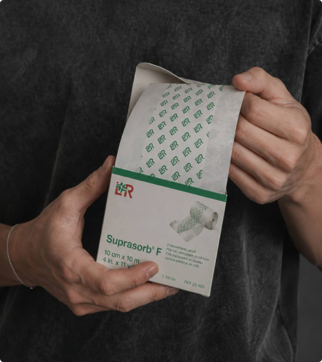
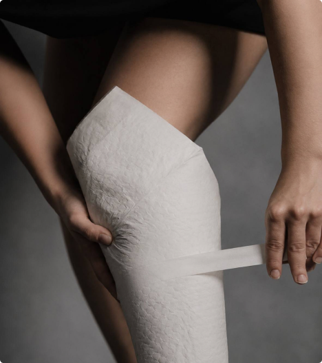
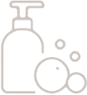
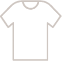
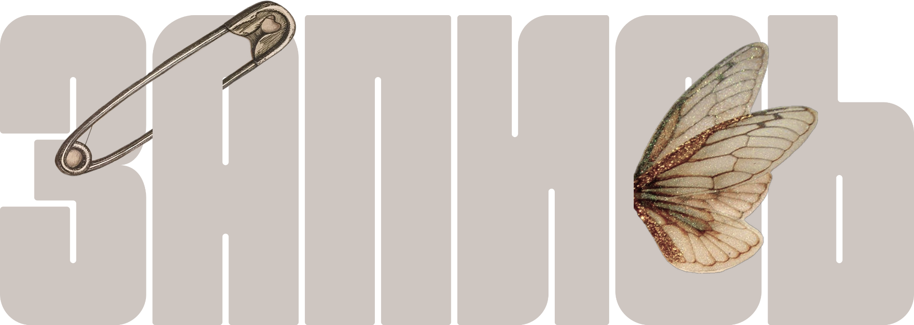
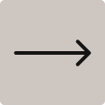

Хорошо выспитесь
Постарайтесь полноценно отдохнуть перед сеансом. Хорошее самочувствие поможет легче перенести процедуру.


Тату-студия в Иваново
Татуировки по авторским эскизам.
Небольшая подготовка поможет сделать сеанс комфортнее, а коже легче перенести процесс.
Постарайтесь полноценно отдохнуть перед сеансом. Хорошее самочувствие поможет легче перенести процедуру.
Не приходите натощак. Лучше заранее нормально поесть, чтобы поддерживать стабильный уровень сахара и хорошее самочувствие.
Алкоголь может усиливать кровоточивость и влиять на общее самочувствие, поэтому перед сеансом от него лучше отказаться.
Не загорайте и не травмируйте участок, на котором будет татуировка. Кожа должна быть здоровой, без раздражения и повреждений.
Выберите свободную одежду, которая позволит легко открыть нужный участок тела и не будет натирать свежую татуировку после сеанса.
Так у нас будет время спокойно подготовиться к началу сеанса.
Выбирайте вещи, которые не мешают получить доступ к месту нанесения татуировки.
Телефон, наушники, книга или планшет помогут скоротать время во время сеанса.
Если сеанс будет долгим, можно взять с собой лёгкий перекус.
Пожалуйста, предупредите студию об этом как можно раньше.
Правильный уход помогает коже спокойно восстановиться, а татуировке зажить без лишнего раздражения.

После сеанса мастер закроет свежую татуировку специальной заживляющей плёнкой.
Под плёнкой может скапливаться жидкость: плазма, лимфа и небольшое количество пигмента. Это нормально и является частью процесса заживления.
Носите плёнку столько, сколько советует мастер. Если рекомендовано четыре дня, снимите её на пятый.
Аккуратно снимите плёнку и промойте татуировку тёплой водой с мягким мылом.

Снимите впитывающую пелёнку через 3–5 часов после сеанса.
Аккуратно промойте татуировку тёплой водой с мылом. Не трите кожу. Промокните её чистым бумажным полотенцем, затем нанесите тонкий слой средства для ухода.
Промывайте и увлажняйте татуировку примерно каждые 3–4 часа в течение первых трёх дней.
После промывания не закрывайте татуировку, дайте коже дышать. Не используйте пелёнку, если мастер не дал иных указаний.
Даже после первых дней заживления коже требуется бережное отношение.

Промывайте татуировку и наносите тонкий слой рекомендованного средства для ухода 2–3 раза в день.
Зуд и шелушение это нормальная часть заживления. Не расчёсывайте татуировку.
Не посещайте сауну, не принимайте горячие ванны и не плавайте, пока татуировка полностью не заживёт.
Пот и постоянное растяжение кожи могут вызывать раздражение во время заживления.

Носите свободную и удобную одежду. Избегайте вещей, которые постоянно натирают татуировку.
Используйте солнцезащитное средство с высоким SPF, чтобы сохранить цвет.
Правильный уход помогает коже хорошо зажить и надолго сохранить татуировку чёткой и аккуратной.
Стоимость начинается от 4 000 ₽. Итоговая цена зависит от размера, расположения, сложности и детализации татуировки.
Расскажите нам о своей идее, и мы сориентируем вас по стоимости до записи.
Обычно ощущения похожи на частое царапанье или лёгкое жжение кожи. На одних участках это почти не беспокоит, на других чувствуется сильнее. Всё зависит от места нанесения и вашей чувствительности.
Самостоятельно сделать татуировку можно с 18 лет.
С 16 до 18 лет потребуется письменное согласие родителя.
Да. Мы используем одноразовые расходные материалы, стерильные инструменты и обрабатываем рабочее место до и после каждого сеанса. Всё, что соприкасается с кожей, защищаем барьерной защитой или используем одноразово.
Напишите нам в сообщество или Telegram.
Или позвоните: +7 901 688-60-70Расскажите о своей идее — мы подскажем стоимость и подберём удобное время.
Конечно! Можно прийти с готовой идеей, референсами или просто задумкой. Мы вместе обсудим детали и создадим эскиз специально для вас.
Да, во многих случаях старую татуировку можно перекрыть. Пришлите нам фото, и мастер посмотрит, что можно сделать, предложит варианты и поможет подобрать новый эскиз.

